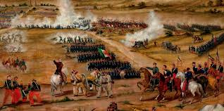

El Día Internacional de los Trabajadores o Primero de Mayo es la fiesta por antonomasia del movimiento obrero mundial. Es una jornada que se ha utilizado habitualmente para realizar diferentes reivindicaciones sociales y laborales a favor de las clases trabajadoras por parte, fundamentalmente, de los movimientos socialistas, anarquistas y comunistas, entre otros. Desde su establecimiento en la mayoría de países (aunque la consideración de día festivo fue en muchos casos tardía) por acuerdo del Congreso Obrero Socialista de la Segunda Internacional, celebrado en París en 1889, es una jornada de lucha reivindicativa y de homenaje a los Mártires de Chicago. Estos sindicalistas anarquistas fueron ejecutados en Estados Unidos por participar en las jornadas de lucha por la consecución de la jornada laboral de ocho horas, que tuvieron su origen en la huelga iniciada el 1 de mayo de 1886 y su punto álgido tres días más tarde, el 4 de mayo, en la Revuelta de Haymarket. A partir de entonces se convirtió en una jornada reivindicativa de los derechos de los trabajadores en sentido general que es celebrada en mayor o menor medida en todo el mundo.
El 1 de mayo de 1886, 200 000 trabajadores iniciaron la huelga mientras que otros 200 000 obtenían esa conquista con la simple amenaza de paro. En Chicago, donde las condiciones de los trabajadores eran mucho peor que en otras ciudades del país, las movilizaciones siguieron los días 2 y 3 de mayo. La única fábrica que trabajaba era la fábrica de maquinaria agrícola McCormik que estaba en huelga desde el 16 de febrero porque querían descontar a los obreros una cantidad de sus salarios para la construcción de una iglesia. La producción se mantenía a base de esquiroles. El día 2, la policía había disuelto violentamente una manifestación de más de 50 000 personas y el día 3 se celebraba una concentración en frente de sus puertas; cuando estaba en la tribuna el anarquista August Spies, sonó la sirena de salida de un turno de rompehuelgas. Los concentrados se lanzaron sobre los scabs (amarillos) comenzando una pelea campal. Una compañía de policías, sin aviso alguno, procedió a disparar a quemarropa sobre la gente produciendo 6 muertos y varias decenas de heridos.
La Batalla de Atlixco tuvo lugar el 4 de mayo de 1862 en las inmediaciones de la Hacienda de las Traperas en Atlixco en el estado de Puebla, México, entre elementos del ejército mexicano de la república, al mando de los generales Antonio Carvajal y Tomás O'Horan contra las tropas al servicio del Segundo Imperio Mexicano comandadas por el general José María Cobos y de Leonardo Márquez, compuesta de soldados conservadores mexicanos en apoyo de envío de refuerzos para llevar a cabo la Batalla de Puebla, durante la Segunda Intervención Francesa en México. Esta batalla culminó con una victoria republicana y debido a esto el grupo conservador de Márquez no pudo lograr su objetivo de auxiliar a las tropas francesas del Conde de Lorencez en la batalla de Puebla.

La batalla de Puebla fue un combate librado el 5 de mayo de 1862 en las cercanías de la ciudad de Puebla, entre los ejércitos de la República Mexicana, bajo el mando de Ignacio Zaragoza, y del Segundo Imperio Francés, dirigido por Charles Ferdinand Latrille, conde de Lorencez, durante la Segunda Intervención Francesa en México, cuyo resultado fue una victoria importante para los mexicanos ya que con unas fuerzas consideradas como inferiores lograron vencer a uno de los ejércitos más experimentados y respetados de su época. Pese a su éxito, la batalla no impidió la invasión del país, sólo la retrasó, sin embargo, sería la primera batalla de una guerra que finalmente México ganaría. Los franceses regresarían al siguiente año, con lo que se libró una segunda batalla en Puebla en la que se enfrentaron 35 000 franceses contra 29 000 mexicanos (defensa que duró 62 días), y lograrían avanzar hasta la Ciudad de México, lo que permitió establecer el Segundo Imperio Mexicano. Finalmente, ante la incapacidad de consolidar un imperio y después de perder 11 000 hombres debido a la actividad guerrillera que nunca dejó de subsistir,1 los franceses se retiraron incondicionalmente del país en el año de1867.
Poco después de reunirse, los representantes de los tres países enviaron un ultimátum al gobierno mexicano en el que pedían el pago de sus deudas; de lo contrario, invadirían el país. Juárez, quien gobernaba a un país que apenas empezaba a levantarse de la postración económica, respondió con un exhorto a lograr un arreglo amistoso, y los invitó a conferenciar. Acompañó ese mensaje con la derogación del decreto que suspendió los pagos. Al mismo tiempo, en vista de la posibilidad real de una invasión militar que buscara llegar hasta la Ciudad de México, ordenó el traslado de pertrechos y la fortificación de Puebla, así como crear una unidad, a la que se designó como Ejército de Oriente, que fue puesta bajo el mando del general José López Uraga. En vista del desempeño deficiente de este mando, fue destituido y en su lugar se designó a Zaragoza, quien dejó el Ministerio de Guerra y se dirigió a Puebla para organizar la oposición al avance francés con cerca de 10,000 hombres; cantidad mínima si se toma en cuenta el vasto territorio que debía cubrirse.
La celebración del Día de las Madres tiene sus antecedentes en la Grecia antigua en honor de Rhea , conocida como 'la madre de los dioses'. Durante el siglo XIX hubo algunas propuestas para dedicar un día a homenajear a las madres, pero no fue sino hasta 1907 cuando Ana Jarvis, nacida en Filadelfia, Estados Unidos, se reunió con un grupo de amigos y les planteó el reto de trabajar para que se estableciera una fecha para esta celebración.
El 10 de mayo de 1913 se emitió la resolución. Fue el presidente Woodrow Wilson quien, el 8 de mayo de 1914, decretó que el Día de las Madres se celebraría en Estados Unidos el segundo domingo de cada mayo. La idea pasó a Europa y casi 40 países en todo el mundo iniciaron las celebraciones. En algunos casos se designó un día específico para llevarla a cabo, como en México, donde el 10 de mayo está dedicado a este festejo.
La iniciativa fue aprobada en 1917 y presentada por los diputados Benito Ramírez y Enrique Viesca, quienes propusieron al presidente Venustiano Carranza fuera establecido el 15 de mayo como día dedicado a los maestros, siendo decreto presidencial celebrar esta fecha como el día del maestro, conmemorándose por primera vez en México en 1918. Uno de los maestros más destacados en México ha sido José Vasconcelos, nombrado Doctor Honoris Causa por la Universidad Nacional Autónoma de México y por las de Chile y Guatemala. Fue llamado el "Maestro de América" y cada 15 de mayo se entrega un reconocimiento que lleva su nombre, a los maestros más destacados en México. “El trabajo de un maestro necesita de esfuerzo, paciencia, dedicación, compromiso y responsabilidad para poder educar, formar y orientar a sus alumnos”
El día del maestro es una festividad que honra la labor de los catedráticos y profesores mexicanos. En México, el día del Maestro se conmemoró por primera vez en 1918 y se propuso que fuera el 15 de Mayo la fecha destinada a conmemorar a todos estos profesionistas que se encargan de enseñar o guiar a los estudiantes. La propuesta pretendía que se instituyera un día en homenaje a los maestros y que fuera el 15 de mayo, fecha conmemorativa de la toma de Querétaro. Dicha iniciativa fue aprobada en 1917, y un año después se celebro por primera vez está fecha.
El Día del Psicólogo se celebra el 20 de mayo de cada año. Es un homenaje y reconocimiento a los psicólogos y profesionales que dedican su vida a la ayuda de sus pacientes con problemas.
En el Día del Psicólogo se realizan diversos actos, eventos y jornadas en las que se trata el tema de la psicología de una manera profunda. Los especialistas pueden intercambiar opiniones sobre el tratamiento a los pacientes, así como analizar los diferentes aspectos del comportamiento humano que observan en la actualidad. Las conclusiones que se obtienen de estas jornadas son muy interesantes a la vez de ser muy útiles para las personas que se dedican a la psicología. A nivel universitario también suelen realizarse congresos en los que pueden participar los estudiantes para aprender cuáles serán las funciones que un día desarrollen como profesionales. En ellas suelen tratarse de una manera más práctica la psicología. Una vez expuesta el caso a tratar cada alumno deberá de intentar reflejar cómo tratar a esa persona, qué decir, qué hacer, etc. La psicología es la ciencia que estudia el comportamiento del ser humano así como la conducta y los procesos mentales. Es decir, estudia los procesos mentales en sus tres dimensiones: Del pensamiento: cognitiva. Del afecto: emociones. Del comportamiento: conductas.
El origen del día del estudiante se remonta al año 1929 cuando los estudiantes de la ahora Universidad Nacional Autónoma de México, se lanzaron a la huelga en favor de la Autonomía Universitaria. Después de una serie de eventos y protestas que culminaron en una huelga general, los alumnos fueron agredidos brutalmente por la policía dentro de las instalaciones de la Escuela de Derecho el día 13 de mayo por tal motivo los alumnos de esta escuela reclamaron que ese día fuera recordado como el Día del Estudiante en honor a los agredidos y que la plaza de Santo Domingo en la Ciudad de México fuera llamada Plaza 23 de mayo o del Estudiante. Un mes después se consiguió la autonomía de esta casa de estudios y con el tiempo en muchos de los estados del país se crearon o se tomaron espacios propicios para la relajación y el estudio y se les denominaron “Jardines del Estudiante”, en honor a esa lucha en pos de la Autonomía Universitaria. Desde entonces se ha venido celebrando cada 23 de mayo el Día del Estudiante, como un recordatorio de la lucha en pro de una educación más abierta y participativa.
En Nicaragua, por Decreto No. 1487 del 18 de julio de 1984 y publicado en La Gaceta No. 153 del 10 de agosto del mismo año,11 se declaró el 23 de julio "Día Nacional del Estudiante Nicaragüense", fecha que es recordada en los centros de enseñanza12 de los niveles de educación primaria, secundaria y universitaria del país en honor a las luchas del movimiento estudiantil universitario nicaragüense. El 23 de julio de 1959, en la ciudad de León, cuatro estudiantes de la Universidad Nacional Autónoma de Nicaragua (UNAN) fueron masacrados brutalmente por la Guardia Nacional de Nicaragua, durante una manifestación estudiantil de repudio a la dictadura somocista por su complicidad en los crímenes cometidos por el ejército hondureño en "El Chaparral", departamento de El Paraíso, Honduras. Los estudiantes universitarios mártires en la masacre del 23 de julio de 1959 son: Sergio Saldaña, Mauricio Martínez, Erick Ramírez y José Rubí,13 quienes se constituyeron en símbolos y sello del compromiso de todas las generaciones estudiantiles con la defensa de la autonomía universitaria y las luchas de reivindicaciones populares.
En Panamá, este día se celebra el 27 de octubre de cada año. En esta fecha, los estudiantes de los grados superiores de la escuela o colegio al que pertenecen, reemplazan a los maestros o profesores. Cada profesor tiene la tarea de buscar entre sus mejores alumnos un reemplazo para él. Además, el estudiante que posee el mayor índice académico, reemplazará al director.Los estudiantes que le sigan en puntaje irán reemplazando respectivamente a los administrativos del colegio. También se hacen agasajos en donde incluso los profesores realizan actos divertidos de canto, baile, dramatización, etc. Los estudiantes más sobresalientes reemplazan a las autoridades de su distrito, usualmente al alcalde del lugar donde se encuentre la escuela o colegio, siendo felicitado por compañeros y familiares.
En Puerto Rico, se celebra el Jueves antes del Segundo Domingo de Mayo o Día de la Madre. En este día se realizan actividades deportivas o días de juegos, como también se hace una fiesta para compartir entre estudiantes, maestros y personal no docente.
En Perú, el 23 de septiembre se celebra el Día del Estudiante Universitario, en reconocimiento a la primera gesta por la búsqueda de la reestructuración universitaria de la Universidad Nacional San Antonio Abad del Cusco, en 1909, y tiene por finalidad valorar y promover la importancia de la actitud de los jóvenes estudiantes de las Universidades Públicas y Privadas del ámbito nacional. Además cada 23 de septiembre se celebra el día del estudiante para las personas que se encuentran en etapa escolar(inicial, primaria y secundaria).
En Venezuela, el día del estudiante se celebra el 21 de noviembre. En 1957 una huelga estudiantil produjo una serie de comunicados que repartieron en volantes. Pese a que la Seguridad Nacional tomó la Universidad Central, apresó a numerosos estudiantes y cerró los centros de educación superior. Tuvo tal éxito que fue uno de los desencadenantes que concluyeron con la caída o huida del gobierno del dictador Marcos Pérez Jiménez.